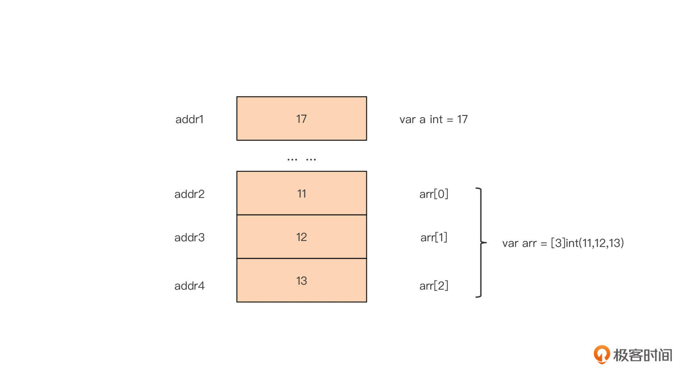
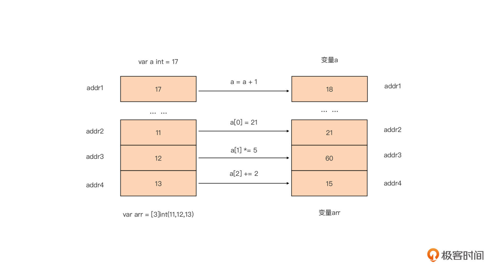
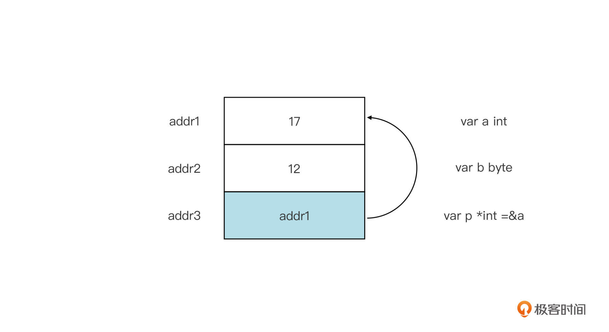
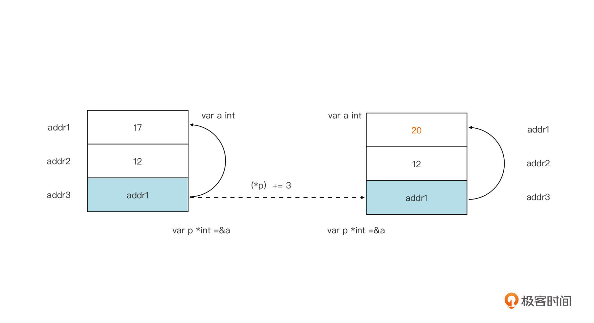
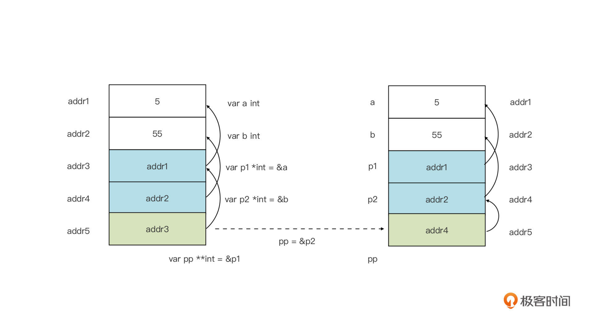
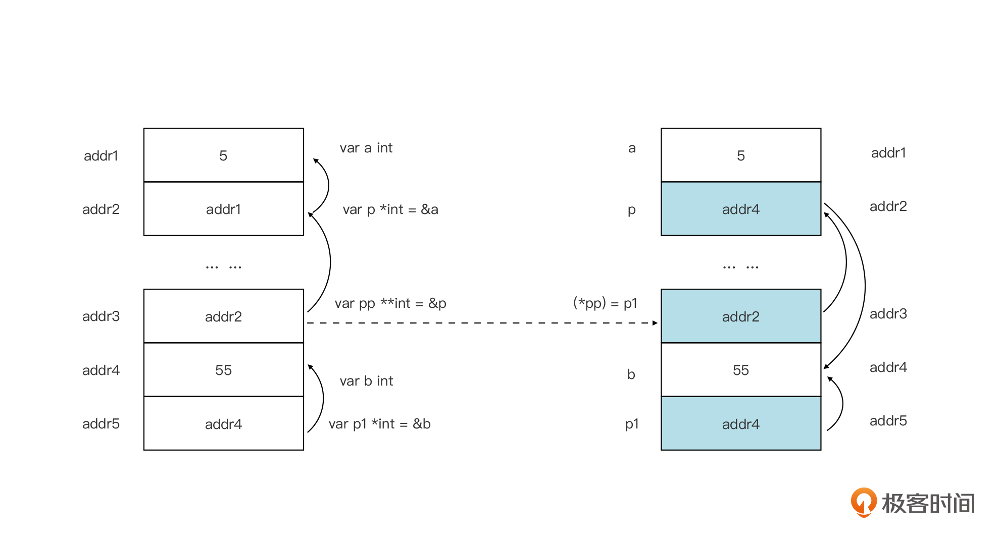

- 00 开篇词 这样入门Go，才能少走弯路.md.html
- 01 前世今生：你不得不了解的Go的历史和现状.md.html
- 02 拒绝“Hello and Bye”：Go语言的设计哲学是怎么一回事？.md.html
- 03 配好环境：选择一种最适合你的Go安装方法.md.html
- 04 初窥门径：一个Go程序的结构是怎样的？.md.html
- 05 标准先行：Go项目的布局标准是什么？.md.html
- 06 构建模式：Go是怎么解决包依赖管理问题的？.md.html
- 07 构建模式：Go Module的6类常规操作.md.html
- 08 入口函数与包初始化：搞清Go程序的执行次序.md.html
- 09 即学即练：构建一个Web服务就是这么简单.md.html
- 10 变量声明：静态语言有别于动态语言的重要特征.md.html
- 11 代码块与作用域：如何保证变量不会被遮蔽？.md.html
- 12 基本数据类型：Go原生支持的数值类型有哪些？.md.html
- 13 基本数据类型：为什么Go要原生支持字符串类型？.md.html
- 14 常量：Go在“常量”设计上的创新有哪些？.md.html
- 15 同构复合类型：从定长数组到变长切片.md.html
- 16 复合数据类型：原生map类型的实现机制是怎样的？.md.html
- 17 复合数据类型：用结构体建立对真实世界的抽象.md.html
- 18 控制结构：if的“快乐路径”原则.md.html
- 19 控制结构：Go的for循环，仅此一种.md.html
- 20 控制结构：Go中的switch语句有哪些变化？.md.html
- 21 函数：请叫我“一等公民”.md.html
- 22 函数：怎么结合多返回值进行错误处理？.md.html
- 23 函数：怎么让函数更简洁健壮？.md.html
- 24 方法：理解“方法”的本质.md.html
- 25 方法：方法集合与如何选择receiver类型？.md.html
- 26 方法：如何用类型嵌入模拟实现“继承”？.md.html
- 27 即学即练：跟踪函数调用链，理解代码更直观.md.html
- 28 接口：接口即契约.md.html
- 29 接口：为什么nil接口不等于nil？.md.html
- 30 接口：Go中最强大的魔法.md.html
- 31 并发：Go的并发方案实现方案是怎样的？.md.html
- 32 并发：聊聊Goroutine调度器的原理.md.html
- 33 并发：小channel中蕴含大智慧.md.html
- 34 并发：如何使用共享变量？.md.html
- 35 即学即练：如何实现一个轻量级线程池？.md.html
- 36 打稳根基：怎么实现一个TCP服务器？（上）.md.html
- 37 代码操练：怎么实现一个TCP服务器？（中）.md.html
- 38 成果优化：怎么实现一个TCP服务器？（下）.md.html
- 39 驯服泛型：了解类型参数.md.html
- 40 驯服泛型：定义泛型约束.md.html
- 41 驯服泛型：明确使用时机.md.html
- 元旦快乐 这是一份暂时停更的声明.md.html
- 加餐 作为Go Module的作者，你应该知道的几件事.md.html
- 加餐 如何拉取私有的Go Module？.md.html
- 加餐 我“私藏”的那些优质且权威的Go语言学习资料.md.html
- 加餐 聊聊Go 1.17版本的那些新特性.md.html
- 加餐 聊聊Go语言的指针.md.html
- 加餐 聊聊最近大热的Go泛型.md.html
- 大咖助阵 叶剑峰：Go语言中常用的那些代码优化点.md.html
- 大咖助阵 大明：Go泛型，泛了，但没有完全泛.md.html
- 大咖助阵 孔令飞：从小白到“老鸟”，我的Go语言进阶之路.md.html
- 大咖助阵 徐祥曦：从销售到分布式存储工程师，我与 Go 的故事.md.html
- 大咖助阵 曹春晖：聊聊 Go 语言的 GC 实现.md.html
- 大咖助阵 海纳：聊聊语言中的类型系统与泛型.md.html
- 期中测试 一起检验下你的学习成果吧.md.html
- 用户故事 罗杰：我的Go语言学习之路.md.html
- 结束语 和你一起迎接Go的黄金十年.md.html
- 结课测试 快来检验下你的学习成果吧！.md.html
- 捐赠
加餐 聊聊Go语言的指针
你好，我是Tony Bai。
刚刚完成专栏结束语，我又马不停蹄地开始撰写这篇加餐，因为在结束语中我曾提到过对专栏没有介绍指针类型的不安，如果你是编程初学者，或者只有动态语言的经验，又或者只有像Java这类不支持指针的静态语言编程的经验，缺少指针的讲解就可能会给你的学习过程带来一些困惑。
因此，在这一篇加餐中，我就来补上指针类型这一课。不过，我建议你不要把这篇当作加餐，而是当作本专栏必学的一节课。
那么什么是指针呢？它和我们常见的Go类型，比如int、string、切片类型等有什么区别呢？下面我们就来一探究竟!
什么是指针类型
和我们学过的所有类型都不同，指针类型是依托某一个类型而存在的，比如：一个整型为int，那么它对应的整型指针就是*int，也就是在int的前面加上一个星号。没有int类型，就不会有*int类型。而int也被称为*int指针类型的基类型。
我们泛化一下指针类型的这个定义：如果我们拥有一个类型T，那么以T作为基类型的指针类型为*T。
声明一个指针类型变量的语法与非指针类型的普通变量是一样的，我们以声明一个*T指针类型的变量为例：
var p *T
不过Go中也有一种指针类型是例外，它不需要基类型，它就是unsafe.Pointer。unsafe.Pointer类似于C语言中的void*，用于表示一个通用指针类型，也就是任何指针类型都可以显式转换为一个unsafe.Pointer，而unsafe.Pointer也可以显式转换为任意指针类型，如下面代码所示：
var p *T
var p1 = unsafe.Pointer(p) // 任意指针类型显式转换为unsafe.Pointer
p = (*T)(p1) // unsafe.Pointer也可以显式转换为任意指针类型
unsafe.Pointer是Go语言的高级特性，在Go运行时与Go标准库中unsafe.Pointer都有着广泛的应用。但unsafe.Pointer属于unsafe编程范畴，我这里就不深入了，你感兴趣可以查一下资料。
如果指针类型变量没有被显式赋予初值，那么它的值为nil：
var p *T
println(p == nil) // true
那么，如果要给一个指针类型变量赋值，我们该怎么做呢？我们以一个整型指针类型为例来看一下：
var a int = 13
var p *int = &a // 给整型指针变量p赋初值
在这个例子中，我们用&a作为*int指针类型变量p的初值，这里变量a前面的&符号称为取地址符号，这一行的含义就是将变量a的地址赋值给指针变量p。这里要注意，我们只能使用基类型变量的地址给对应的指针类型变量赋值，如果类型不匹配，Go编译器是会报错的，比如下面这段代码：
var b byte = 10
var p *int = &b // Go编译器报错：cannot use &b (value of type *byte) as type *int in variable declaration
到这里，我们可以看到：指针类型变量的值与我们之前所了解的任何类型的值都不同，那它究竟有什么特别之处呢？我们继续往下看。
在专栏的第10讲中，我们学习过如何在Go中声明一个变量。每当我们声明一个变量，Go都会为变量分配对应的内存空间。如果我们声明的是非指针类型的变量，那么Go在这些变量对应的内存单元中究竟存储了什么呢？
我们以最简单的整型变量为例，看看对应的内存单元存储的内容：

我们看到，对于非指针类型变量，Go在对应的内存单元中放置的就是该变量的值。我们对这些变量进行修改操作的结果，也会直接体现在这个内存单元上，如下图所示：

那么，指针类型变量在对应的内存空间中放置的又是什么呢？我们还以*int类型指针变量为例，下面这张示意图就展示了该变量对应内存空间存储的值究竟是什么：

从图中我们看到，Go为指针变量p分配的内存单元中存储的是整型变量a对应的内存单元的地址。也正是由于指针类型变量存储的是内存单元的地址，指针类型变量的大小与其基类型大小无关，而是和系统地址的表示长度有关。比如下面例子：
package main
import "unsafe"
type foo struct {
id string
age int8
addr string
}
func main() {
var p1 *int
var p2 *bool
var p3 *byte
var p4 *[20]int
var p5 *foo
var p6 unsafe.Pointer
println(unsafe.Sizeof(p1)) // 8
println(unsafe.Sizeof(p2)) // 8
println(unsafe.Sizeof(p3)) // 8
println(unsafe.Sizeof(p4)) // 8
println(unsafe.Sizeof(p5)) // 8
println(unsafe.Sizeof(p6)) // 8
}
这里的例子通过unsafe.Sizeof函数来计算每一个指针类型的大小，我们看到，无论指针的基类型是什么，不同类型的指针类型的大小在同一个平台上是一致的。在x86-64平台上，地址的长度都是8个字节。
unsafe包的Sizeof函数原型如下：
func Sizeof(x ArbitraryType) uintptr
这个函数的返回值类型是uintptr，这是一个Go预定义的标识符。我们通过go doc可以查到这一类型代表的含义：uintptr是一个整数类型，它的大小足以容纳任何指针的比特模式（bit pattern）。
这句话比较拗口，也不好理解。我们换个方式，可以将这句话理解为：在Go语言中uintptr类型的大小就代表了指针类型的大小。
一旦指针变量得到了正确赋值，也就是指针指向某一个合法类型的变量，我们就可以通过指针读取或修改其指向的内存单元所代表的基类型变量，比如：
var a int = 17
var p *int = &a
println(*p) // 17
(*p) += 3
println(a) // 20
我们用一副示意图来更直观地表示这个过程：

通过指针变量读取或修改其指向的内存地址上的变量值，这个操作被称为指针的解引用（dereference）。它的形式就是在指针类型变量的前面加上一个星号，就像前面的例子中那样。
从上面的例子和图中，我们都可以看到，通过解引用输出或修改的，并不是指针变量本身的值，而是指针指向的内存单元的值。要输出指针自身的值，也就是指向的内存单元的地址，我们可以使用Printf通过%p来实现：
fmt.Printf("%p\n", p) // 0xc0000160d8
指针变量可以变换其指向的内存单元，对应到语法上，就是为指针变量重新赋值，比如下面代码：
var a int = 5
var b int = 6
var p *int = &a // 指向变量a所在内存单元
println(*p) // 输出变量a的值
p = &b // 指向变量b所在内存单元
println(*p) // 输出变量b的值
多个指针变量可以指向同一个变量的内存单元的，这样通过其中一个指针变量对内存单元的修改，是可以通过另外一个指针变量的解引用反映出来的，比如下面例子：
var a int = 5
var p1 *int = &a // p1指向变量a所在内存单元
var p2 *int = &a // p2指向变量b所在内存单元
(*p1) += 5 // 通过p1修改变量a的值
println(*p2) // 10 对变量a的修改可以通过另外一个指针变量p2的解引用反映出来
讲到这里，你应该对指针的概念有一定的了解了。不过，有同学可能会问：既然指针变量也作为一个内存单元存储在内存中，那么是否可以被其他指针变量指向呢？好，下面我们就来回答这个问题！
二级指针
首先剧透一下：可以！我们来看下面这个例子：
package main
func main() {
var a int = 5
var p1 *int = &a
println(*p1) // 5
var b int = 55
var p2 *int = &b
println(*p2) // 55
var pp **int = &p1
println(**pp) // 5
pp = &p2
println(**pp) // 55
}
在这个例子中，我们声明了两个*int类型指针p1和p2，分别指向两个整型变量a和b，我们还声明了一个**int型的指针变量pp，它的初值为指针变量p1的地址。之后我们用p2的地址为pp变量作了重新赋值。
通过下面这个示意图，能更容易理解这个例子（注意：这里只是示意图，并非真实内存布局图）：

我们看到，**int类型的变量pp中存储的是*int型变量的地址，这和前面的*int型变量存储的是int型变量的地址的情况，其实是一种原理。**int被称为二级指针，也就是指向指针的指针，那自然，我们可以理解*int就是一级指针了。
前面说过，对一级指针解引用，我们得到的其实是指针指向的变量。而对二级指针pp解引用一次，我们得到将是pp指向的指针变量：
println((*pp) == p1) // true
那么对pp解引用二次，我们将得到啥呢？对pp解引用两次，其实就相当于对一级指针解引用一次，我们得到的是pp指向的指针变量所指向的整型变量：
println((**pp) == (*p1)) // true
println((**pp) == a) // true
那么二级指针通常用来做什么呢？我们知道一级指针常被用来改变普通变量的值，那么可以推断，二级指针就可以用来改变指针变量的值，也就是指针变量的指向。
前面我们提到过，在同一个函数中，改变指针的指向十分容易，我们只需要给一级指针重新赋值为另外一个变量的地址就可以了。
但是，如果我们需要跨函数改变一个指针变量的指向，我们就不能选择一级指针类型作为形参类型了。因为一级指针只能改变普通变量的值，无法改变指针变量的指向。我们只能选择二级指针类型作为形参类型。
我们来看一个例子：
package main
func foo(pp **int) {
var b int = 55
var p1 *int = &b
(*pp) = p1
}
func main() {
var a int = 5
var p *int = &a
println(*p) // 5
foo(&p)
println(*p) // 55
}
对应这段代码的示意图如下（注意：仅是示意图，不是内存真实布局）：

在这个例子中我们可以看到，通过二级指针pp，我们改变的是它指向的一级指针变量p的指向，从指向变量a的地址变为指向变量b的地址。
即便有图有真相，你可能也会觉得理解二级指针还是很困难，这很正常。无论是学习C还是学习Go，又或是其他带有指针的静态编程语言，二级指针虽然仅仅是增加了一个“间接环节”，但理解起来都十分困难，这也是二级指针在Go中很少使用的原因。至于三级指针或其他多级指针，我们更是要慎用，对它们的使用会大幅拉低你的Go代码的可读性。
接下来我们再来看看指针在Go中的用途以及使用上的限制。
Go中的指针用途与使用限制
Go是带有垃圾回收的编程语言，指针在Go中依旧位于C位，它的作用不仅体现在语法层面上，更体现在Go运行时层面，尤其是内存管理与垃圾回收这两个地方，这两个运行时机制只关心指针。
在语法层面，相对于“指针为王”的C语言来说，Go指针的使用要少不少，这很大程度上是因为Go提供了更灵活和高级的复合类型，比如切片、map等，并将使用指针的复杂性隐藏在运行时的实现层面了。这样，Go程序员自己就不需要在语法层面通过指针来实现这些高级复合类型的功能。
指针无论是在Go中，还是在其他支持指针的编程语言中，存在的意义就是为了是“可改变”。在Go中，我们使用*T类型的变量调用方法、以*T类型作为函数或方法的形式参数、返回*T类型的返回值等的目的，也都是因为指针可以改变其指向的内存单元的值。
当然，指针的好处，还包括它传递的开销是常数级的（在x86-64平台上仅仅是8字节的拷贝），可控可预测。无论指针指向的是一个字节大小的变量，还是一个拥有10000个元素的[10000]int型数组，传递指针的开销都是一样的。
不过，虽然Go在语法层面上保留了指针，但Go语言的目标之一是成为一门安全的编程语言，因此，它对指针的使用做了一定的限制，包括这两方面：
限制一：限制了显式指针类型转换。
在C语言中，我们可以像下面代码这样实现显式指针类型转换：
#include <stdio.h>
int main() {
int a = 0x12345678;
int *p = &a;
char *p1 = (char*)p; // 将一个整型指针显式转换为一个char型指针
printf("%x\n", *p1);
}
但是在Go中，这样的显式指针转换会得到Go编译器的报错信息：
package main
import (
"fmt"
"unsafe"
)
func main() {
var a int = 0x12345678
var pa *int = &a
var pb *byte = (*byte)(pa) // 编译器报错：cannot convert pa (variable of type *int) to type *byte
fmt.Printf("%x\n", *pb)
}
如果我们“一意孤行”，非要进行这个转换，Go也提供了unsafe的方式，因为我们需要使用到unsafe.Pointer，如下面代码：
func main() {
var a int = 0x12345678
var pa *int = &a
var pb *byte = (*byte)(unsafe.Pointer(pa)) // ok
fmt.Printf("%x\n", *pb) // 78
}
如果我们使用unsafe包中类型或函数，代码的安全性就要由开发人员自己保证，也就是开发人员得明确知道自己在做啥！
限制二：不支持指针运算。
指针运算是C语言的大杀器，在C语言中，我们可以通过指针运算实现各种高级操作，比如简单的数组元素的遍历：
#include <stdio.h>
int main() {
int a[] = {1, 2, 3, 4, 5};
int *p = &a[0];
for (int i = 0; i < sizeof(a)/sizeof(a[0]); i++) {
printf("%d\n", *p);
p = p + 1;
}
}
但指针运算也是安全问题的“滋生地”。为了安全性，Go在语法层面抛弃了指针运算这个特性。在Go语言中，下面的代码将得到Go编译器的报错信息：
package main
func main() {
var arr = [5]int{1, 2, 3, 4, 5}
var p *int = &arr[0]
println(*p)
p = p + 1 // 编译器报错：cannot convert 1 (untyped int constant) to *int
println(*p)
}
如果我们非要做指针运算，Go依然提供了unsafe的途径，比如下面通过unsafe遍历数组的代码：
package main
import "unsafe"
func main() {
var arr = [5]int{11, 12, 13, 14, 15}
var p *int = &arr[0]
var i uintptr
for i = 0; i < uintptr(len(arr)); i++ {
p1 := (*int)(unsafe.Pointer(uintptr(unsafe.Pointer(p)) + i*unsafe.Sizeof(*p)))
println(*p1)
}
}
上面这段代码就通过unsafe.Pointer与uintptr的相互转换，间接实现了“指针运算”。但即便我们可以使用unsafe方法实现“指针运算”，Go编译器也不会为开发人员提供任何帮助，开发人员需要自己告诉编译器要加减的绝对地址偏移值，而不是像前面C语言例子中那样，可以根据指针类型决定指针运算中数值1所代表的实际地址偏移值。
小结
好了，讲到这里指针的这节加餐就结束了，不知道现在你是否对指针有了一个初步的认知了呢！
指针变量是一种在它对应的内存单元中，存储另外一个变量a对应的内存单元地址的变量，我们也称该指针指向变量a。指针类型通常需要依托某一类型而存在，unsafe包的Pointer类型是个例外。
指针变量的声明与普通变量别无二异，我们可以用一个指针的基类型的变量的地址，为指针变量赋初值。如果指针变量没有初值，那它的默认值为nil。通过对指针变量的解引用，我们可以读取和修改其指向的变量的值。
我们可以声明指向指针的指针变量，这样的指针被称为二级指针。二级指针可以用来改变指针变量的值，也就是指针变量的指向。不过二级指针以及多级指针很难理解，一旦使用会降低代码的可读性，我建议你一定要慎用。
另外，出于内存安全性的考虑，Go语言对指针的使用做出了限制，不允许在Go代码中进行显式指针类型转换以及指针运算，当然我们可以通过unsafe方式实现这些功能，但在使用unsafe包的类型与函数时，你一定要知道你正在做什么，确保代码的正确性。
思考题
学完这一讲后，我建议你回看一下本专栏中涉及指针的章节与实战项目，你可能会有新的收获。
© 2019 - 2023 Liangliang Lee. Powered by gin and hexo-theme-book.